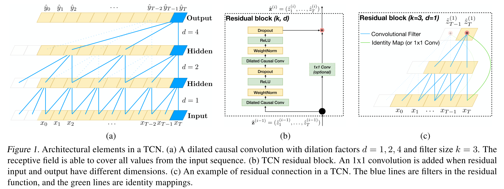

- 来源：arXiv-2018
摘要
给出一个序列建模任务，应当使用哪一种架构（循环/卷积）？
经评估，结果展示一个简单的卷积架构对不同范围的任务和数据集比典型的如LSTM的循环网络表现更好。引言
- 文章用TCN来代表卷积网络，结果展示TCNs在广泛的序列建模任务中表现优于循环结构baseline。
- TCNs表现出了更长的记忆力，一次更适合于需要长期历史信息的领域。
- TCN架构不仅比典型的循环结构更精确，而且更简单和清晰。
Temporal Convolutional Networks
- TCNs的特征：
- 架构中的卷积是因果卷积，意味着不会有信息从未来泄漏到现在。
- 该结构可以接受任意长度的序列并将其映射到输出，如RNN一样。使用深度网络和扩展卷积探索如何建立一个非常长期有效的历史。
- TCN比WaveNet更简单，没有skip连接，上下文叠加等
序列模型(sequence model)
- 学习目标是最小化实际输出和预测值之间的期望损失
因果卷积(causal convolutions)
- TCN基于两个原则：（1）网络的输入输出有相同的长度；（2）没有未来的信息泄漏到过去
- For(1)：RCN采用一维全卷积网络，zero padding的长度等于kernel size - 1，以保持随后的层和之前的层有相同的长度。
- For(2)：TCN使用因果卷积。
- TCN = 1D FCN + causal convolutions.
- 主要的缺点：为了实现一个长期有效的历史size，需要一个极深的网络或者极大的滤波器，这在实际中是不可行的
扩展卷积(dilated convolutions)
- 实现一个指数级变大的感受野
- $F(s)=(x\ast _{d}f)(s)=\sum_{i=0}^{k-1}f(i)\cdot X_{S-d\cdot i}$
- $d$是扩展因子；$k$是filter size；$s-d\cdot i$是过去的方向；
- 使用更大的扩展使得顶层的输出可以表示一个更宽泛的输入，从而有效的扩张卷积网络的感受野。
- 两个提高感受野的方法：(1)选择更大的过滤大小k；(2)增加扩展因子d；
残差连接(residual connections)
- $o=Axtivation(x+F(x))$
- TCN模型中，使用一个常用的残差模块代替卷积层。在残差块中，TCN有两层因果卷积和非线性，因此使用Relu；归一化上使用weight normalization；此外，在每一次扩展卷积后添加dropout正则。
- 在标准的ResNet中输入被直接加入残差函数的输出；在TCN中，输入和输出可能有不同的宽度；
- 考虑输入输出宽度的不同，我们使用一个额外的1X1卷积来确保元素加法$\bigoplus$收到相同尺寸的张量；
- figure1：TCN
讨论
优点
- 并行：与RNNs预测之后的时间戳必须要等待之前时间戳完成不同，卷积可以在并行的执行因为它们在每一层使用相同filter；
- 灵活的感受野大小：TCN可以用多种方式改变其感受野的大小，如堆叠更多的扩展卷积层，使用更大的扩展因子，又或者增大filter size；
- 稳定梯度：与循环结构不同，TCN有一个与序列的时间方向不同的反向传播。因此TCN避免了梯度消失和爆炸的问题；
- 对于训练的低内存需要：TCN的filters在层次之间共享；
- 可变的输入长度：TCNs可通过华东1D卷积核产生任意长度的输入；
缺点
- 评估期间的数据存储：TCNs需要获取到有效历史记录长度的原始序列，因此在计算期间可能需要更多内存；
领域转换时潜在的参数改变：当模型从一个仅需要较少记忆的领域转向一个需要更长记忆的领域，TCN可能由于其感受野大小不足而变现很差；
table1：TCNs的评估